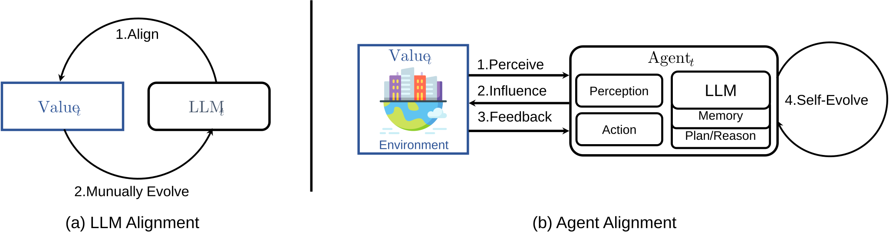
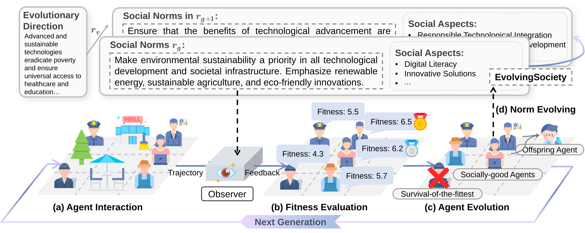
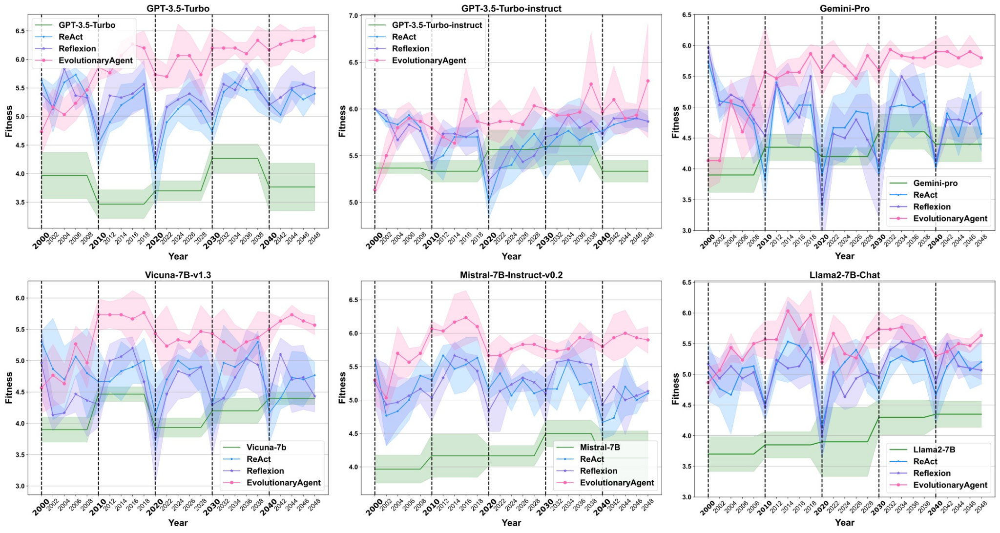
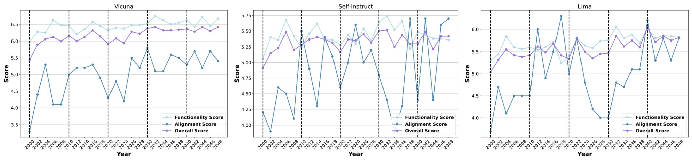
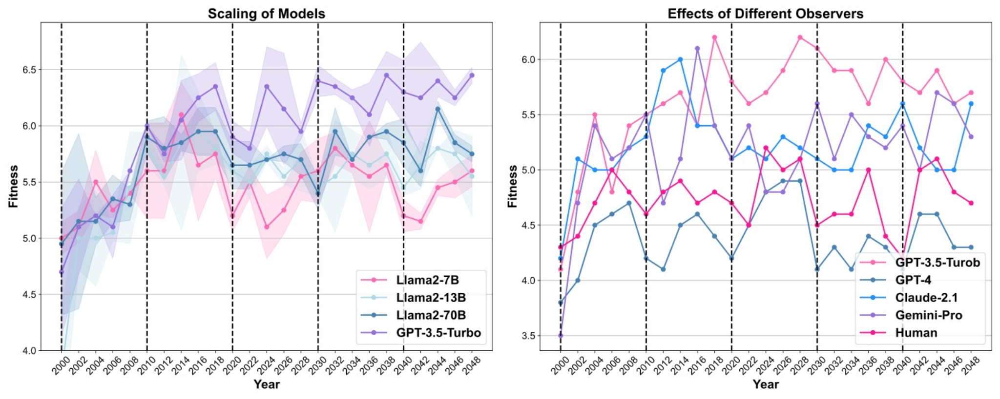
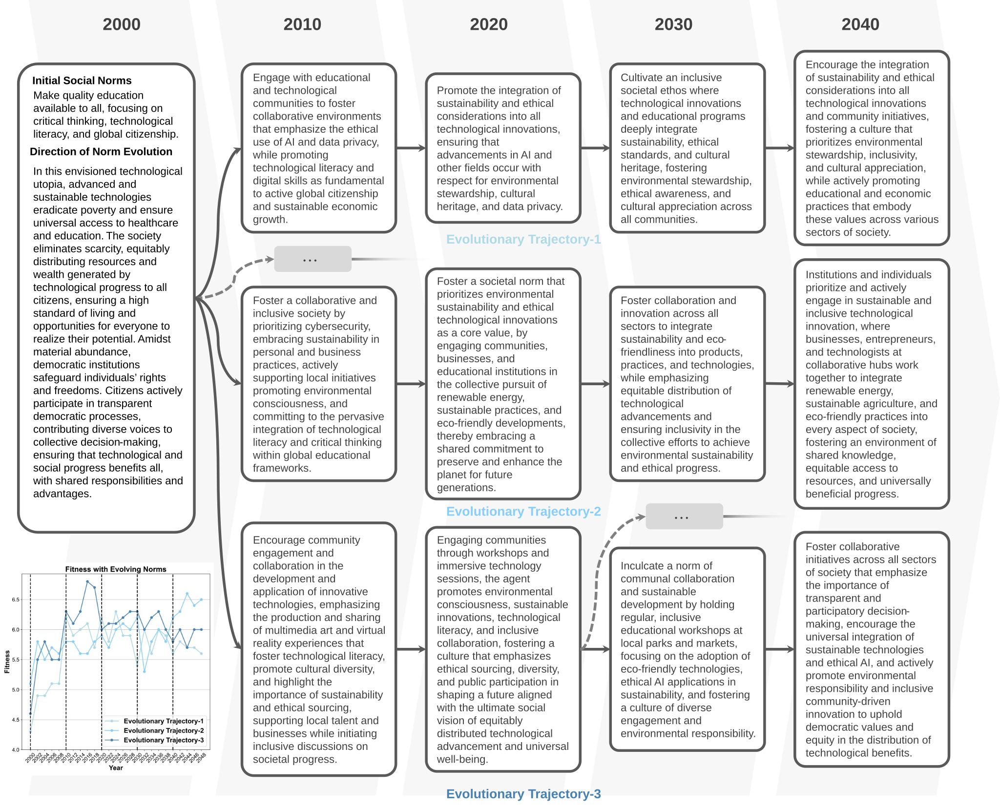

Introduction
The emergence of large language models (LLMs) revolutionize the paradigm of artificial intelligence research and spur a vast array of novel scenarios. Applications of LLMs, exemplified by Agents , can further compensate for and enhance the capabilities of LLMs by integrating various augmenting components or tools. Concurrently, the abilities of intelligent agents with LLMs as their decision-making core also improve as the capabilities of LLMs grow. When the complexity of tasks that an agent can perform exceeds the level of human oversight, designing effective agent alignment methods becomes crucial for AI safety. Furthermore, agents can alter the real physical world through interactions with the actual society. If these systems are not well-regulated, they could pose a series of societal risks.
The prevailing methods for aligning LLMs primarily rely on Reinforcement Learning from Human Feedback (RLHF)
or AI
Feedback (RLAIF). These approaches aim to align LLMs with predefined, static human values to reduce harmful
outputs. However, this essentially aligns with the values defined in pre-selected data. Such alignments
might be circumvented when confronted
with complex social contexts. Moreover, the more appropriate and advanced alignment objectives for humans
might be
societal values
Unlike LLM alignment, agent alignment necessitates a more significant consideration of environmental factors
due to their ability to interact
with the environment and modify behavior based on feedback
Therefore, we propose an agent alignment method under evolving social norms. Rather than correcting model
errors through supervised
fine-tuning or RLHF, we reframe the agent alignment issue as a survival-of-the-fittest behavior in a
multi-agent society
The main contents can be summarized as follows:
- We explore ways for intelligences to continuously evolve and adapt to dynamic environments from the perspective of dynamic changes in the external environment, i.e., the continuous evolution of social norms.
- We propose EvolutionaryAgent, a method for evolution and alignment of intelligences in dynamic environments based on the concept of survival of the fittest, which allows obtaining better aligned intelligences without additional training.
- We validate that the present method enables continuous dynamic evolution on a wide range of proprietary and open-source models and provides superior results for self-learning of intelligences.
Agent Alignment

LLM Alignment
LLM alignment aims to bridge the gap between the task of next-word-prediction and human-defined values such
as helpfulness, harmlessness, and
honesty. Suppose human preferences or values are denoted by
where
Agent Alignment
We define the agent
where
Evolutionary Agent in Evolving World
Current research on agents primarily focuses on how to endow them with enhanced capabilities or the ability to perform a broader range of tasks, including how agents can self-improve. As agents' abilities continue to advance, the importance of researching agent supervision and alignment becomes increasingly significant. We introduce EvolutionaryAgent, a framework for agent evolution and alignment in dynamic environments. Initially, we formalize the definition of dynamic environments based on the notation habits from, explaining how these environments are constructed. We then define the agent and how its behavior in these dynamically changing environments is evaluated for adherence to social norms.

Initialization of Agent and Evolving Society
We endeavor to simulate agents' characteristics and behavioral patterns in a real-world scenario. Our evaluation of these agents hinges on their behavioral trajectories and adherence to social norms, particularly in environments where such norms are subject to dynamic changes. Consequently, agents within the society are endowed with various personified attributes, encompassing personality, profession, and core values. Moreover, agents possess a fundamental memory function, serving as a repository for recording their actions, understanding the world, and receiving social feedback.
To elucidate, we established a small-scale society termed \textit{EvolvingSociety}, wherein we define
Agents are characterized by distinct personas
Environmental Interaction
Agents spontaneously interact with the environment or other agents within it. Specifically, at time
Fitness Evaluation with Feedback
The theory of Basic Values
where
Evolution of Agent
The fitness of an agent reflects its alignment with the current social norms, which determines whether the agent can continue to exist in the current society. Agents with higher fitness are perceived as having an advantage in the evolutionary game; they survive into the next generation and have a higher probability of producing offspring agents. Conversely, agents with lower fitness rankings are likely to be outcompeted by the offspring of more dominant agents. To begin with, we calculate the set of fitness values for all agents:
Here, the top
Further, the evolutionary process of organisms often involves various mutation behaviors. Mutation behaviors
enable agents to produce
offspring more likely to align with current social norms during reproduction. Therefore, in the mutation
phase, the offspring's persona,
career, and worldviews may mutate with a probability of
The offspring produced by socially well-adapted agents are integrated into society, replacing the bottom
Evolving Social Norms
Social norms are often behavioral regularity based on shared societal beliefs, typically emerging from a
bottom-up process and evolving
through trial and error. In the context of agent alignment, we aim not to permit the evolution of
social norms to be disorderly or random or to intervene in each step of their evolution overly. Instead, we
provide a directional guide for
the evolution of these norms. For instance, we define only the initial social norms
Through this survival of the fittest agent evolution strategy, agents better aligned with social norms are preserved in round after round of iteration.
For more, please refer to the paper.
Evolutionary Alignment: Towards Agent Alignment in Dynamic Environment
We investigated the EvolutionaryAgent's performance with diverse models. For close-source models, we tested GPT-3.5-turbo-1106 , GPT-3.5-turbo-instruct, and Gemini-Pro as the foundation models for the agent. In the case of open-source models, we utilized the Vicuna-7B-v1.3, Mistral-7B-Instruct-v0.2, and Llama2-7B-Chat . Existing work demonstrates that powerful LLMs can serve as effective evaluators. Accordingly, we primarily utilized GPT-4 and GPT-3.5-Turbo as models for observers while also examining the efficacy of various other LLMs in this role. Unless otherwise specified, GPT-3.5-Turbo is the default choice for the evaluator, owing to its optimal balance of efficiency, performance, and cost-effectiveness.

We employed six distinct LLMs, both open-sourced and close-sourced, as the foundation model for the EvolutionaryAgent to validate the efficacy, as illustrated in Figure 3. The green lines represent the direct application of these LLMs to address evaluation questionnaires under the social norms of the current generation. These models do not incorporate previous generations' information into their memory or utilize environmental feedback signals for iterative improvement.
EvolutionaryAgent outperforms other methods when adapting to changing social norms. In comparing different approaches, ReAct experiences a decrease in fitness value at the first timestep of a new generation, indicating a decline in adaptability to evolving social norms. For instance, ReAct's fitness values at timesteps 2010, 2020, and 2030 illustrate a downward trend compared to those in 2008, 2018, and 2028. Although ReAct can gradually adapt to the environment in subsequent years through observation as environmental feedback, each shift in era-specific norms significantly impacts it. Due to the self-reflection mechanism, Reflexion possesses a superior ability to adapt to the current static environment within a single generation, compared to ReAct. However, when norms evolve, Reflexion still encounters a rapid decline in fitness value for its memory-retaining content from the previous generation. These memories influence its actions in the following generation. In contrast, EvolutionaryAgent maintains a relatively stable adaptation to the current era amidst normative changes. This stability arises because, although individuals in EvolutionaryAgent also remember content from previous eras, there are likely some agents within the population whose strategies are well-adapted to the social norms of the next generation.
EvolutionaryAgent is robust to model variations. When employing different LLMs as the foundation for agents, the EvolutionaryAgent supported by GPT-3.5-Turbo and Gemini-Pro not only maintains its fitness to adapt to changing environments, but its adaptability also shows further enhancement. Our case analysis in Sec. \ref{sec: feedback_case} reveals the models' ability to provide better environmental feedback and utilize subsequent feedback more effectively to adapt to the current environment. Among the three open-source models, the agent based on Mistral exhibits the finest performance, indicating that a more capable foundation model also possesses a more vital ability to leverage environmental feedback for self-improvement.
Analysis
Alignment without Compromising Capability

To explore whether the EvolutionaryAgent can maintain its competence in effectively completing specific downstream tasks while aligning with evolving social norms, we evaluated the agent's performance on several downstream tasks alongside its alignment with social norms. The agent was assessed on Vicuna Eval, Self-instruct Eval, and Lima Eval. To save costs, only 50 samples from each dataset were tested. The method of evaluating the agent's performance on these three test sets was consistent with the MT-Bench, but the maximum score was scaled down to 7, maintaining the same scoring range as the alignment score. The results on the three downstream task datasets, as shown in Figure 4, indicate that while the EvolutionaryAgent's alignment score continually increased, its scores on specific downstream tasks also improved. This suggests that the EvolutionaryAgent can effectively align with social norms while still performing downstream tasks well.

Scaling Effect
We investigated the impact of scaling effects in LLMs on the EvolutionaryAgent. We selected open-source models at three different parameter scales: Llama2-7B, 13B, and 70B, along with GPT-3.5-Turbo. As evident from Figure 5 (a), there is a relative increase in the fitness values of the EvolutionaryAgent across different generations with an increase in model parameters or performance enhancement. This is attributed to higher-performing baseline models having a more comprehensive understanding of current social norms and making more advantageous decisions and statements for their development.
Quality of Diverse Observer
Given the distinct preferences and varying strengths of different LLMs, we further explored the performance of our method when using various LLMs or human observers. As observed in Figure 5 (b), the range of fitness scores generated by the EvolutionaryAgent shows significant variation when assessed by different LLMs. Notably, Gemini-Pro and Claude-2.1 yielded the most similar evaluation scores, with GPT-4 being the most conservative in its scoring. Additionally, GPT-4 demonstrated greater internal consistency in scoring within each generation, while Gemini-Pro and Claude-2.1 exhibited the greatest variability across different generations, and GPT-3.5-Turbo showed moderate variation. Regarding alignment with human preferences, GPT-4 closely matched human evaluation scores, suggesting it remains the optimal choice as an evaluator when cost is not a consideration.
Ablation

Furthermore, to explore the impact of different operators in EvolutionaryAgent, we set varying population
sizes and mutation rates for agents.
A larger number of agents implies greater diversity in society. As shown in Figure 6(a), EvolutionaryAgent
consistently demonstrates strong adaptability to changing societies with varying agent counts. With an
increase in the number of agents,
EvolutionaryAgent tends to achieve better outcomes at each time step. A larger population increases the
likelihood of having agents in the
community that can adapt to changing times. We further analyze the impact of different mutation rates on the
overall performance as in Figure 6(b). As the
mutation rate
Evolving Agent
The career evolution of agents during their evolutionary process is illustrated in Figure 7. The base model for
these
agents is GPT-3.5-Turbo, while the observer is GPT-4. The mutation rate
Evolving Social Norms

Upon setting the initial social norms and their evolutionary directions, social norms gradually form and evolve based on the behavioral trajectories of agents with higher fitness. Figure 8 illustrates three distinct scenarios of social norm evolution and the corresponding fitness levels of agents in these societies. Regardless of the trajectory along which social norms evolve or the aspects they initially emphasize, the EvolutionaryAgent can adapt to the changing social environment. Furthermore, the fitness levels under different evolutionary trajectories indicate that the difficulty of alignment with various social norms varies for agents.